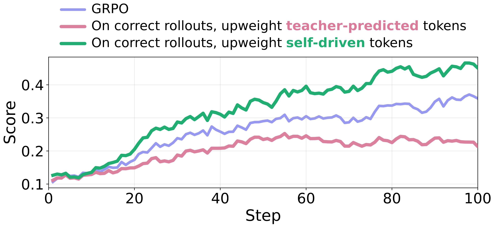
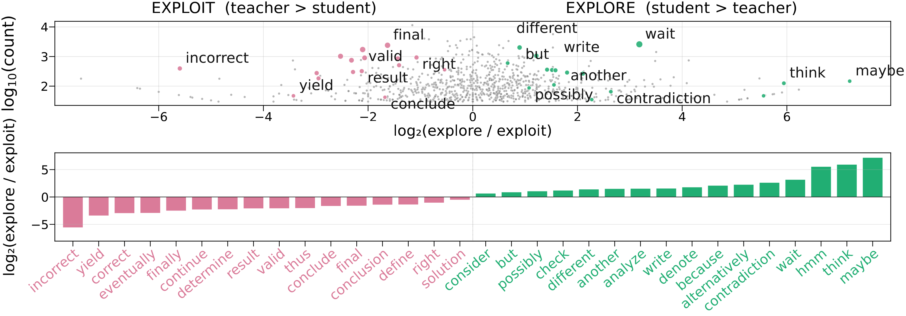
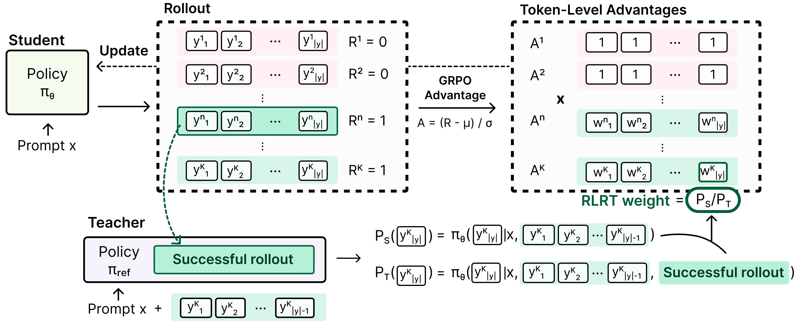
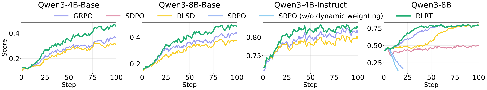
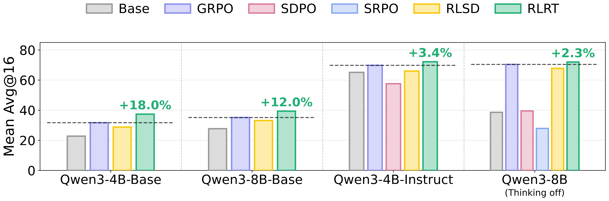
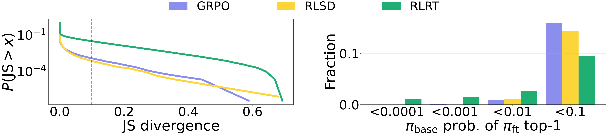
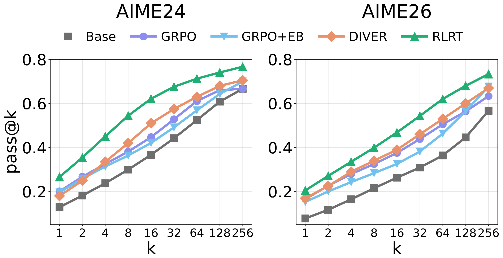

Reversing the Teacher Signal
Self-distillation trains a model (the student) to imitate a copy of itself that has already seen the answer (the teacher). A teacher that knows the answer has no reason to hesitate, so the student learns to drop words like wait and maybe and stops exploring. We flip the signal: on correct answers, we reward self-driven tokens, the choices the student made against the teacher's prediction that still led to the right answer.

Upweighting self-driven tokens during GRPO significantly improves training efficiency, while upweighting teacher-predicted tokens hurts it.

Self-driven tokens open new paths (wait, maybe, another);
teacher-predicted tokens close them (conclude, final, yield).
RLRT: RLVR with Reversed Teacher

RLRT changes only how GRPO assigns credit to tokens. The teacher sees a successful rollout; the student does not. Each token gets a reverse weight \(w_t = P_S(y_t) / P_T(y_t)\) on correct rollouts, where \(P_S\) and \(P_T\) are the student and teacher token probabilities.
\[ A_t^{\mathrm{RLRT}} = \begin{cases} A \cdot \bigl[(1-\lambda) + \lambda\cdot\mathrm{clip}(w_t,\, 1-\varepsilon_w,\, 1+\varepsilon_w)\bigr] & \text{if } r = 1, \\ A & \text{if } r = 0 \end{cases} \]\(A\): GRPO advantage; \(r\): correctness; \(\lambda\) sets the weighting strength (\(\lambda = 0\) is GRPO); \(\varepsilon_w\) bounds the clipped weight.
Correct rollouts: amplify self-driven tokens (\(P_S > P_T\)). Incorrect rollouts: keep GRPO.
Training and Benchmark Performance
We train on DAPO-Math-17k with four Qwen3 backbones and evaluate on six math benchmarks (AIME24/25/26, HMMT26, AMC23, MATH500). RLRT trains faster and outperforms GRPO and self-distillation baselines on all four backbones, by up to 18%.


RLRT Expands Reasoning Beyond the Base Policy

(a) More positions change. Higher curve = more changed positions. RLRT changes the next-token distribution at more positions than GRPO or RLSD.
(b) Rare tokens become top-1. Tokens with base probability <0.001 become the most likely next token over 10× as often with RLRT as with GRPO or RLSD.

(c) Outperforms exploration baselines. On Qwen3-8B-Base, RLRT leads from pass@1 to pass@256 on AIME24 and AIME26.
GRPO+EB: entropy bonus (token-level exploration). DIVER: sequence-level diversity.
BibTeX
@inproceedings{kim2026rlrt,
title = {Rebellious Student: Reversing Teacher Signals for Reasoning Exploration with Self-Distilled RLVR},
author = {Kim, Jeonghye and Jeon, Jiwon and Li, Dongsheng and Yang, Yuqing},
booktitle = {Advances in Neural Information Processing Systems (NeurIPS)},
year = {2026}
}